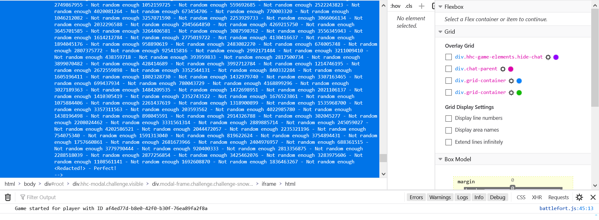
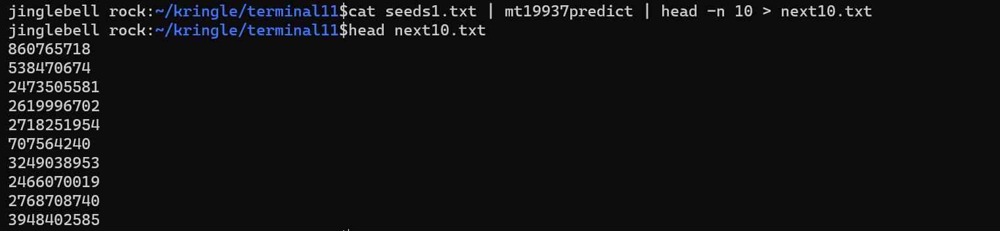
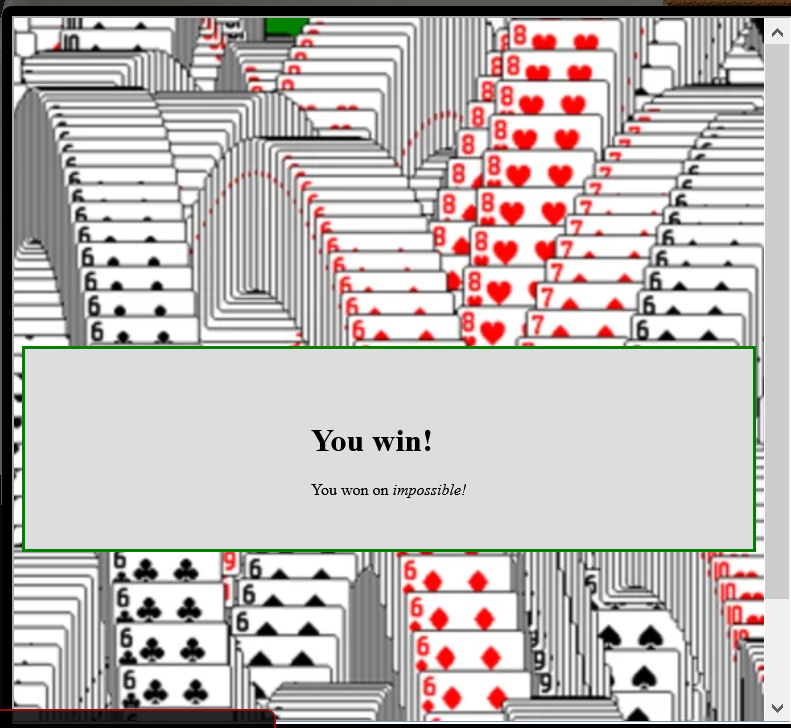

12)Snowball Game
Chat with Tangle Coalbox
Howdy Boss. You look a tad flushed.
Can I get you some water from the vending machine?
I'm still looking into the Snowball Game like you asked.
I read the write-up of the test completed earlier this summer with the web socket vulnerabilities.
I was able to complete the Easy level, but the Impossible level is, umm...
I'd call it impossible, but I just saw someone beat it!
Is it possible that the name a player provides influences how the forts are laid out?
Oh, oh, maybe if I feed a Hard name into an Easy game I can manipulate it!
UGH! on Impossible, the best I get are rejected player names in the page comments... maybe that's useful?
I'll have to re-watch Tom Liston's talk again.
Thanks for all the tips and encouragement Santa!
Hints Courtesy Tangle Coalbox
Mersenne Twister
Python uses the venerable Mersenne Twister algorithm to generate PRNG values after seed. Given enough data, an attacker might predict upcoming values.
PRNG Seeding
While system time is probably most common, developers have the option to seed pseudo-random number generators with other values.
Twisted Talk
Tom Liston is giving two talks at once - amazing! One is about the Mersenne Twister.
Extra Instances
Need extra Snowball Game instances? Pop them up in a new tab from https://snowball2.kringlecastle.com.
Solution
The key idea here is that the name of the player is linked to the game that is presented to the player. same name=same game. The names on the impossible level are redacted. If could somehow predict the name we would get on an impossible level we can input this name to play the same game on easy and then come back to impossible and beat it! Let's open up an game on impossible level and inspect the html page. We see the following comment. This looks like a list of random rejected names. We assume these numbers were generated by MT-19937.

Now opening these comments in a text file we see that we have 624 names. We can predict the next name using mt19937predict tool as shown below.

860765718 is the name of the next game. We can play this game in easy, record the solution and use this solution to beat the game on impossible!

Rejoice
Yay! we helped Tangle Coalbox!